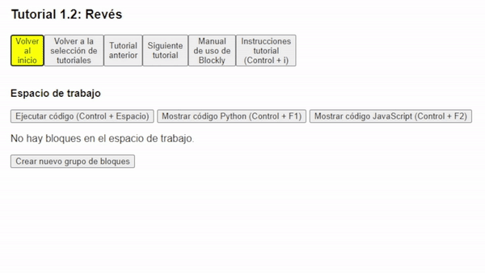
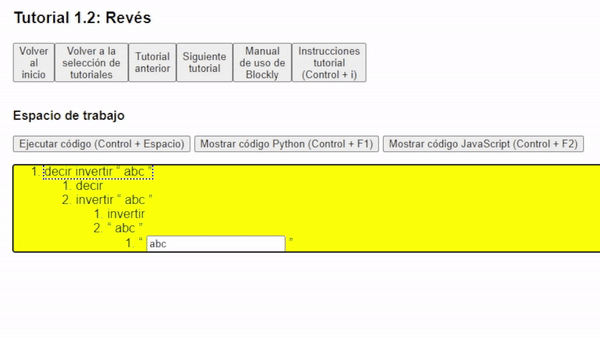
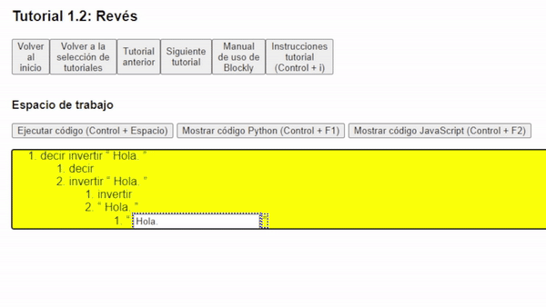
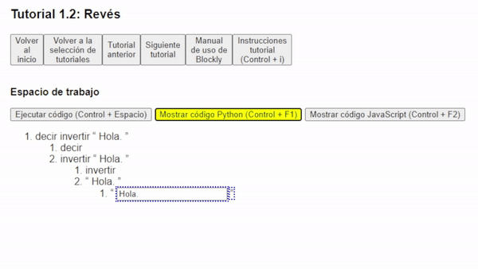

¡Bienvenido al tutorial 1.2 de Accessible Blockly!
Esta es una nueva ventana del navegador, si quieres cambiar de ventana puedes presionar Alt + Tab, y si quieres cerrar esta ventana puedes presionar Control + W.
Recuerda que los pasos deben realizarse en la ventana anterior llamada "Tutorial Blockly", por lo que te recomendamos que tengas ambas ventanas
abiertas para que puedas seguir las instrucciones.
En el tutorial anterior aprendimos a crear un programa que decía un texto en la pantalla.
Si fuiste capaz de realizarlo, ¡felicidades! Si no lo lograste, no te preocupes, puedes volver a intentarlo o seguir con este tutorial.
Ahora vamos a aprender a crear un programa que nos diga una frase al revés. Por lo que debemos seguir los siguientes pasos:
- Primero debemos crear un nuevo grupo de bloques y seleccionar: "decir invertir abc".

- Ahora tenemos que recordar que los bloques se dividen en bloques internos. Primero nuestro bloque se divide en "decir" e "invertir abc", pero "invertir abc" también se divide en "invertir" y "abc".
Entonces para poder modificar el contenido que queremos invertir, debemos llegar hasta "abc".
- Una vez que hayas llegado hasta "abc", a continuación modificamos el contenido del texto al que nosotros queramos, al igual que en el tutorial anterior.

- Finalmente ejecutamos el código presionando el botón: "Ejecutar código", o presionando las teclas Control + Espacio, y podemos escuchar el resultado de nuestro programa.
Recuerda que también puedes escuchar como sería nuestro programa en Python y JavaScript.


- Ahora ya sabes como crear un programa que te diga una frase al revés, pero esto no es lo único que puedes hacer con los bloques de Blockly, así que te invitamos a seguir aprendiendo en el siguiente tutorial.
Pero antes no te olvides de cerrar esta ventana presionando Control + W.